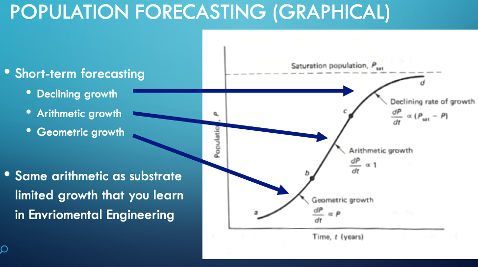

4. Demand Estimation#
Demand estimates are required to size water systems to meet some purpose, or establish that the particular system is infeasible.
Note
This entire section is not yet complete - until so done, refer to Demand Estimation.pdf. The content is identical. As the content is moved here obsolete parts will be identified, and newer ideas inserted.
Estimates of demand are used to size water systems to meet some purpose, or establish that the particular system is infeasible.
The purposes can include:
Municipal uses (drinking water, fire suppression, commercial use, …)
Industrial use (separate from municipal)
Agriculture use
Waste Assimilation use
Navigation uses (outside scope this course)
Water Needs for a City#
Consider some generic urban area (cite textbook)

Municipal Requirements
Large Industrial Requirements
Waste Assimilation Requirements
Municipal Requirements#
A simple relationship establishes municipal requirements:
where \(V\) is the volume required, \(P_{t}\) is the population at some moment, \(U\) is the per person usage.
Thus the two components required to estimate demand is how many people have to be supplied, and how much each person uses.
Population Models#

GEOMETRIC GROWTH (MATHEMATICAL)
When the growth curve is in the exponential phase
\(P_2 = P_1*e^{K_p(t_2-t_1)}\)
where \(K_p\) is the exponential growth constant
ARITHMETIC GROWTH (MATHEMATICAL)
When the growth curve is roughly a straight line, then
\(P_2 = P_1 + K_A(t_2-t_1)\)
where \(K_A\) is the slope of the growth curve
DECLINING GROWTH (MATHEMATICAL)
When the growth curve approaching the carrying capacity of the region
\(P_2 = P_1 + (P_{sat} - P_1)\cdot(1-e^{K_D(t_2-t_1)})\)
where \(K_D\) is the declining rate constant
Temporal Variation#
The demand is not constant, methods to consider the demand variation within some planning interval are available.
Readings#
Gupta, R. S. 2017. Hydrology and Hydraulic Systems. Waveland Press, Inc. pp 1-19 http://54.243.252.9/ce-3372-webroot/3-Readings/WaterDemand-Gupta.pdf
Nickerson G. 2008. “Water Distribution Systems” in Land Development Handbook, Ed. S.O. Dewberry, Dewberry Inc., McGraw-Hill http://54.243.252.9/ce-3372-webroot/3-Readings/water-distribution.pdf